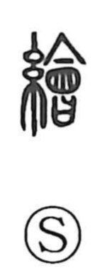

絵

Kun: e, egaku | On: kai
picture ・ painting ・ drawing
Explanation
絵, formerly 繪, combines 糸, thread, with 會 as its sound element. 會 pictures a covered vessel in which different foods are gathered together. In 繪, that gathering is applied to colours brought together in textile work.
The first sense is a richly coloured design woven or embroidered in silk. Different coloured threads make a visible pattern, just as the vessel gathers different ingredients. The traditional description speaks of embroidery combining the five colours.
From the textile pattern, 絵 broadens to a picture and the act of depicting something. Colouring and drawing remain connected with the original arrangement of coloured threads into an image.